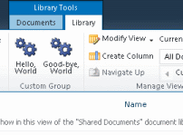

Ribbon Group |


|
|
|
Ribbon Group |
Adds a new group to an existing ribbon tab

| Name | Description |
|---|---|
| General Settings | |
| Name | Required Text. Specifies the name of the button control. |
| Title | Required Text. The text to label the control. |
| Description | Required Text. The text that appears as the description of the tooltip. |
| Sequence | Required Integer. An integer that specifies the order of placement among sibling XML nodes. |
| Target Location Settings | |
| Custom Action Location | Required Text. Location element of the custom action. |
| Optional Permission Settings | |
| Rights | Optional Text. Specifies a set of rights that the user must have in order for the link to be visible. If not specified, then the action always appears in the list of actions. The set of rights are grouped logically according to AND logic. |
| Require Site Administrator | Optional Boolean. TRUE to specify that the item be displayed only if the user is a site administrator; otherwise, FALSE. Using the RequireSiteAdministrator attribute for the drop-down menu of Windows SharePoint Services commands associated with list items is not supported. |
| Optional List Settings | |
| Registration Type | Optional Text. Specifies the registration attachment for a per-item action. Possible values include: None, List, ContentType, ProgId, FileType |
| Registration Id | Optional Text. Specifies the identifier of the list or item content type that this action is associated with, or the file type or programmatic identifier (ProgID). Enter the list type (e.g. 101) or the content type (e.g.0x10). |
| Location Settings | |
| Parent Ribbon Tab | Required Text. Specifies the existing ribbon tab into which the new group should be added. |
|
Disclaimer: The views and opinions expressed in this documentation and in SPSF are those of the authors and do not necessarily reflect the opinions and recommendations of Microsoft or any member of Microsoft. All trademarks, service marks, collective marks, copyrights, registered names, and marks used or cited by this documentation are the property of their respective owners.
SharePoint Software Factory, Version 4.1.2.2904, GPLv2, see http://spsf.codeplex.com for more information |